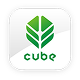
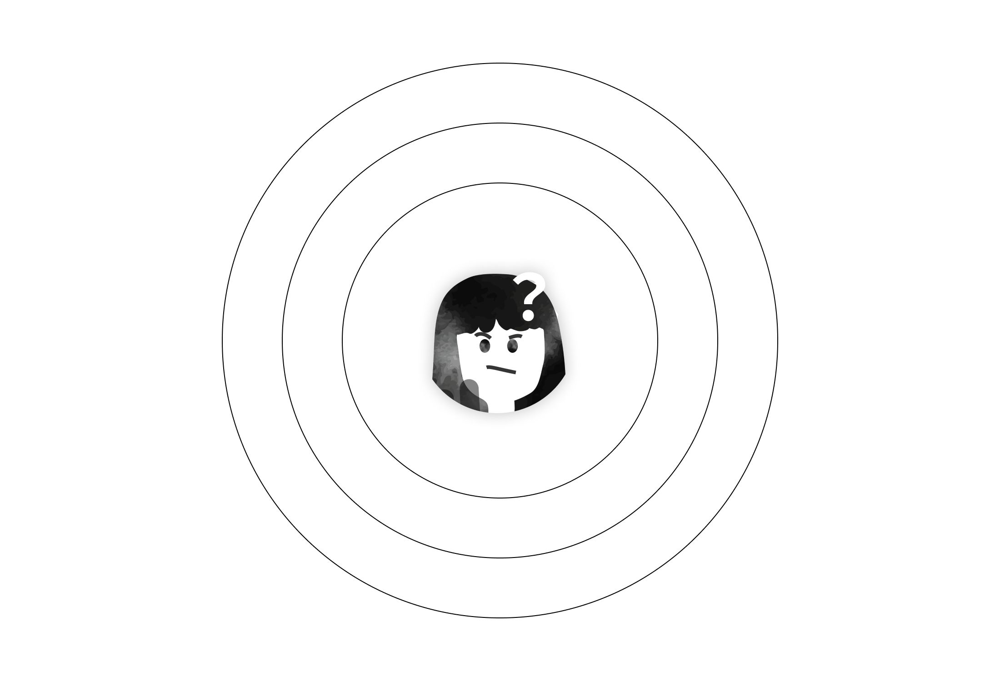
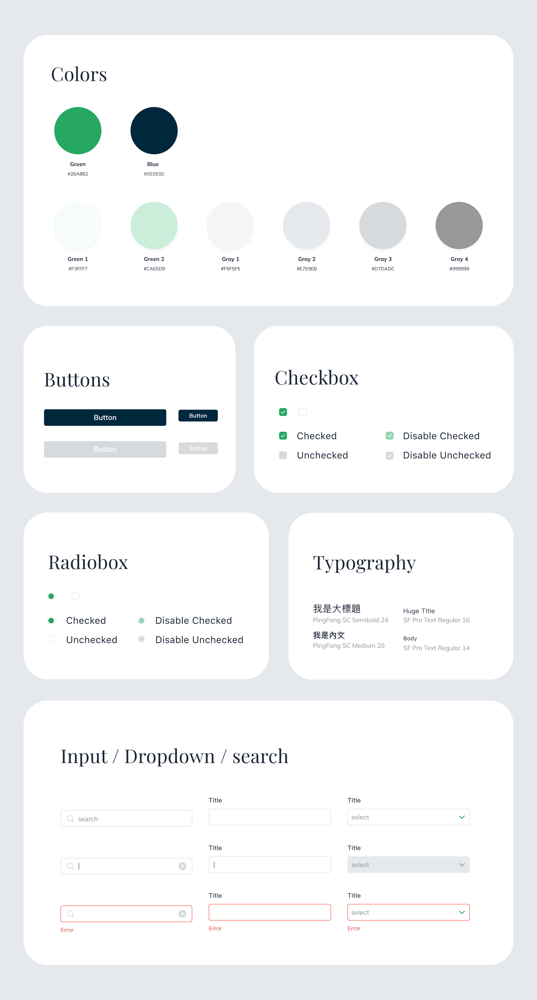
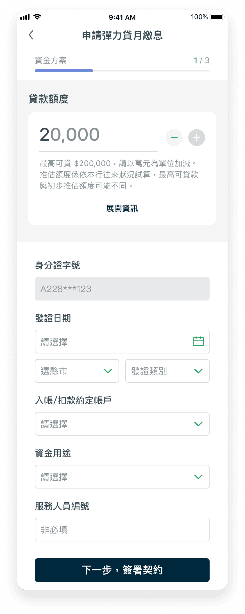
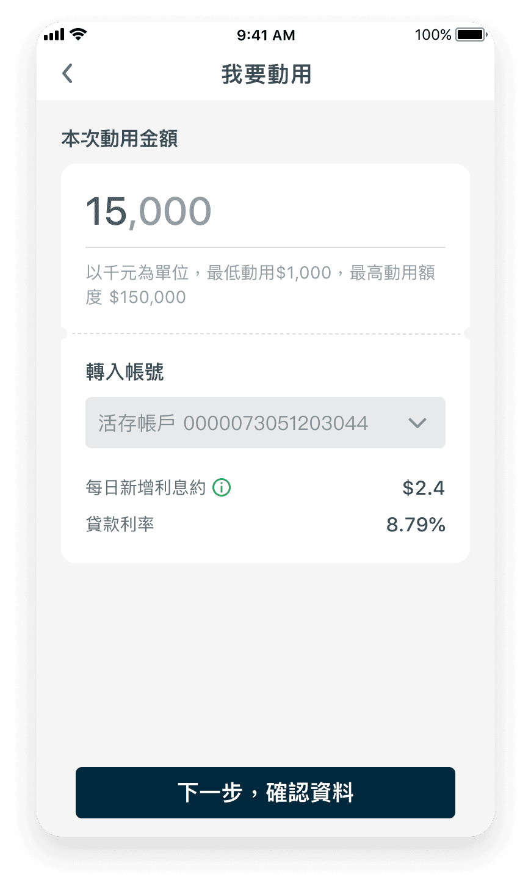
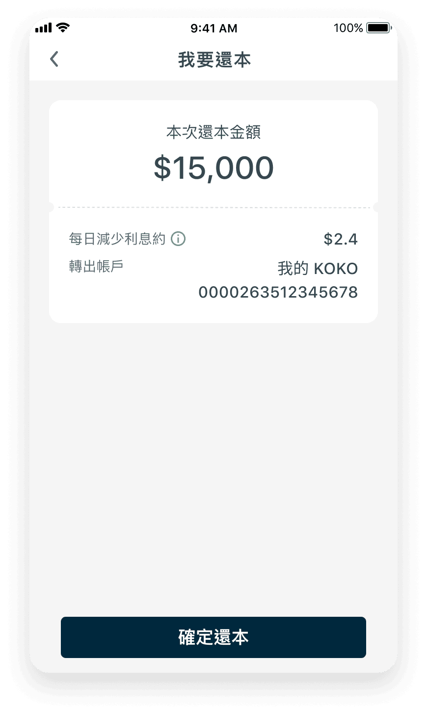

CUBE App
國泰世華商業銀行
專案團隊
2 名專案經理
6 名開發人員
1 名UIUX設計師
時間軸
2023 - 2024
設計開發 6 個月
專案範圍
CUBE App - 貸款 “ 彈力貸 ”
CUBE App 擁有 630 萬+ 用戶，每月近 3,000 萬次使用，提供帳戶管理、轉帳繳費、外匯交易、投資理財、信用卡管理、數位提款 等多元金融服務。透過 生物辨識登入、交易通知、即時風險控管，確保交易安全無憂。
彈力貸
具備無綁約、靈活借還、額度可循環使用等特點，僅計算動用金額的利息，提供彈性的資金運用方案
Challenges ⤵
改版、優化、溝通
這次任務是改版、優化『 貸款 - 彈力貸 』產品。 但由於歷史太久遠，當初負責 PM 已離職 Wireframe 也遺失，只能拿舊版有的設計畫面比對改版。所以資訊和畫面會與架上會不同或是缺少。除了 UI/UX 的改版、優化外，還需要花費更多時間和 PM 、RD、QA 一起重新梳理盤點畫面功能。
Goals ⤵
業務需求
BUSINESS REQUIREMENTS
以 安全性 和 易用性 為核心，設計直覺且流暢的 借款、還款、申請 流程，突顯產品優勢，提升「彈力貸」的借款轉換率。
使用痛點
USER PAIN POINTS
深入分析使用者痛點，整合功能與頁面，聚焦核心需求，優化操作體驗，以提升效率與便利性。
視覺風格
VISUAL STYLE
統一 CUBE App 視覺風格，降低開發成本，減少視覺干擾，提升產品整體的可用性與一致性。
My Role ⤵
與 PM、RD、QA 密切合作，全面梳理並盤點畫面功能，確保操作介面與邏輯的可行性。同時，維持設計元素的一致性，透過反覆測試與優化，成功平衡平台的功能性與美觀性，打造更流暢的使用體驗。
01
蒐集
COLLECT
- 細節畫面盤點
- 資訊架構整合
- 討論調整修改
02
發現
DISCOVERY
- 使用者痛點探索
- 整理需求
- 定義問題
03
設計
DESIGN
- 視覺設計
- 元件調整
- 反饋和迭代
04
測試
TESTING
- UI 提供
- 協助 RD 開發
- 協助 QA 測試
User Research ⤵
重新設計前，邀請5位使用者試用舊版操作，進行訪問及分析
申請操作步驟過多
圖表呈現不知道什麼意思？
找不到想看的資訊
數字輸入卡卡的
說明好長，瀏覽好久

Design System ⤵

Overview ⤵
首 頁
首頁的主要目標是鼓勵使用者進行借款操作，避免過多明細資訊分散注意力。

改版前
色彩單一，畫面缺乏重點，層次不夠分明，視覺容易受到干擾，使用者難以快速聚焦重要資訊。
條款與資訊需跳轉至下一頁查看，導致操作步驟過多，不夠直覺與便利
圖表呈現不夠清晰，難以快速理解

改版後
採用簡約清新的配色，提升文字與背景的對比度，使重點內容更易辨識
條款與資訊調整為收合與上滑顯示，使用者可直接在首頁操作，提升直覺性與便利性
圖表設計以儀表板概念呈現，類似汽機車的時速表，能即時反映使用者的借款與還款行為，加強互動感。提升對比度，使圖表更加清晰直觀
申貸流程
申請貸款涉及法規、條款、貸款額度、利率、期數與帳管費等大量資訊，雖然部分內容重複，但仍有其必要性。然而，申請流程若增加過多步驟，可能導致使用者流失，因此資訊的整合至關重要。

改版前
操作功能與資訊缺乏層級區分，畫面雜亂，重點資訊不易閱讀，影響使用者體驗
舊版貸款額度畫面容易讓使用者誤解可輸入萬元以下的數值，且數據分析快捷鍵使用率低
過多資訊填滿整個螢幕，使用者需下滑才能發現更多表單內容，影響操作流暢度

改版後
操作區與表單以灰底區隔，對比更清晰，畫面簡潔，使使用者能快速辨識重點資訊
其他輔助資訊採用收合式設計，展開可查看更多內容，不佔版面，同時露出下方填寫表單的區域
其他輔助資訊採用收合式設計，展開可查看更多內容，不佔版面，同時露出下方填寫表單的區域
更多設計細節
直覺性的操作介面
分類清晰，輕鬆查找

資料呈現清楚，簡潔明瞭
為了保護客戶的版權，若需詳細內容，請與我聯繫。